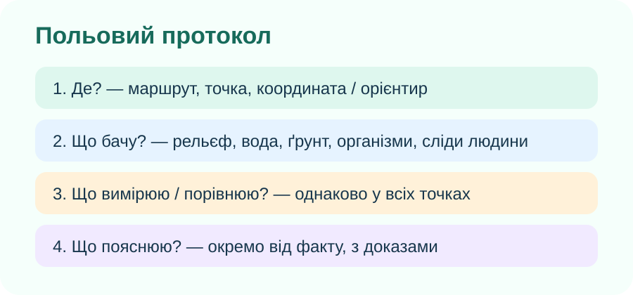
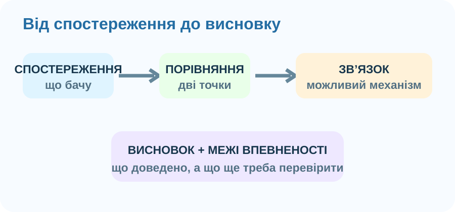

1. Перед виходом: безпека — частина дослідження
Не ризикуємо заради даних

Польовий протокол допомагає не підміняти спостереження враженнями.
2. Сплануйте маршрут і точки спостереження
OpenStreetMap. Для реальної екскурсії збільште карту до своєї місцевості та оберіть 2–3 безпечні точки, які відрізняються умовами.
Конструктор точки
Сильне питання
Має містити об’єкт + ознаку + порівняння або зв’язок. Наприклад: «Чи пов’язана густота трав’яного покриву з вологістю ґрунту на двох ділянках?»
3. Зберіть дані: шість компонентів одного комплексу

Рельєф
Рівнина, схил, балка, заплава? Вкажіть форму і мікрорельєф, а не просто «гарно».

Рослинність
Покриття, ярусність, переважаючі життєві форми, сліди пошкодження.

Вода й вологість
Водойма, струмок, заболочення, сухість поверхні, сліди стоку.

Вплив людини
Стежки, витоптування, сміття, випас, насадження, укріплення берегів.
Міні-протокол точки A
4. Від даних до системи: знайдіть причинні зв’язки
Який ланцюг логічніший?

Доказова пастка
На ділянці біля дороги рослин менше. Чи доводить це, що саме вихлопні гази стали причиною?
5. Фото, координата й запис: що робить спостереження відтворюваним?
Мінімальний доказовий пакет
- Фото загального вигляду.
- Фото деталі або об’єкта.
- Дата й точка/координати.
- Короткий опис того, що спостерігали.
- Окремо — Ваше пояснення, яке ще треба перевірити.
Спостереження чи інтерпретація?
6. Коротке відео: як фіксувати спостереження
iNaturalist: коротко про фото, місце, час та ідентифікацію спостереження. Для шкільної роботи публікувати дані в сервісі необов’язково — важливий сам принцип якісної фіксації.
7. Теорія — тепер, після польової діяльності
Природний комплекс
Територія, де рельєф, породи, вода, повітря, ґрунти та живі організми утворюють взаємопов’язану систему. Зміна одного компонента може спричинити зміни інших.
Алгоритм характеристики
1) положення і межі; 2) рельєф; 3) вода й зволоження; 4) ґрунт; 5) рослинність і тварини; 6) взаємозв’язки; 7) вплив людини; 8) висновок.
Польовий доказ
Найсильніший висновок спирається не на одну ознаку, а на кілька узгоджених спостережень, порівняння точок і чітке розділення «бачу» та «пояснюю».
8. Підсумок CER
Питання: «Чи є обрана ділянка цілісним природним комплексом, і який зв’язок між її компонентами найкраще підтверджують Ваші дані?»
9. Домашнє завдання
Повторіть §51. Оформіть характеристику одного природного комплексу своєї місцевості за алгоритмом. Формат на вибір: письмовий опис, 5–7 слайдів, коротке відео, малюнок-схема або модель. Обов’язково: 2 власні спостереження + 1 схема взаємозв’язку + висновок.
Електронний підручник / ВШО10. Тест — 10 балів
Джерела й інструменти
OpenStreetMap · iNaturalist · NASA Earth Science Remote Sensing · реальні зображення: Wikimedia Commons.